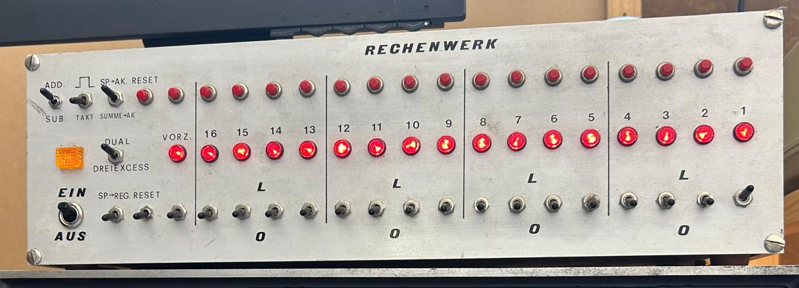

Der Rechenwerk-Demonstrator ist ein technisches Lehrgerät zur Veranschaulichung der grundlegenden Funktionsweise eines digitalen Rechenwerks. Über Schalter und Taster können binäre Zahlen manuell eingegeben, verarbeitet und über Leuchtanzeigen dargestellt werden.
Das Gerät hat keinen offiziellen Hersteller. Es wurde als Lehrgerät entwickelt und ist ein eigenständiges Demonstrationsgerät zur Veranschaulichung digitaler Rechenprozesse.
Das Gerät gehört zur Kategorie der didaktischen Informatik- und Elektronik-Lehrsysteme. Es handelt sich nicht um einen vollwertigen Computer, sondern um ein Demonstrations- und Experimentiergerät zur Darstellung digitaler Rechenprozesse.
Der Demonstrator wird zur Vermittlung von Grundlagen der Digitaltechnik und Informatik eingesetzt. Insbesondere dient er zur Erklärung von binärer Zahlendarstellung, Addition, Subtraktion, Registerfunktionen sowie der Arbeitsweise eines Akkumulators.
Ein genaues Baujahr sowie ein offizielles Verkaufsjahr sind nicht eindeutig dokumentiert. Aufgrund der Bauweise und Bedienelemente lässt sich das Gerät zeitlich vermutlich in den Bereich der Informatik-Lehrsysteme des späten 20. Jahrhunderts einordnen (70er-90er Jahre).
Solche Demonstrationsgeräte wurden mit der Verbreitung moderner Computer, Simulationen und Software-Lehrsysteme zunehmend ersetzt. Heute übernehmen digitale Lernprogramme und Emulatoren die Veranschaulichung dieser Rechenprozesse.
Man kann mit den Knöpfen die Licher manuell einschalten (Zahlen eingeben) und mit den Schaltern Wette einstelen die beim Takten zu dem Wert die aktuelle auf den Lampen eingestellt ist addieren oder subtrahieren. Es gibt auch die Möglichkeit die Werte zu speichern und zu laden. Alle Rechenvorgänge werden durch die Leuchtanzeigen direkt sichtbar gemacht, was das Verständnis der zugrunde liegenden digitalen Logik erleichtert.
Dies wären die Einstellunegn für eine einfach Addition und Subtraktion: Der Schalter bei (Dual) / (Dreiexcess) muss auf Dual eingestellt sein, damit die Werte im Dualsystem eingegeben werden können. Der Schalter bei Add/Sub muss auf Add eingestellt sein, damit die Werte addiert werden. Wenn man die Werte subtrahieren möchte, muss man den Schalter bei Add/Sub auf Sub einstellen. Der Schalter bei Reset muss auf - eingestellt sein, der Schalter bei (SP. -> AK) / (Summe -> AK.) muss auf (Summe -> AK) eingestellt sein und um zu Takten muss der Schalter (Takt) / (_|-|_) einmal hoch und dann runter gedrückt werden.